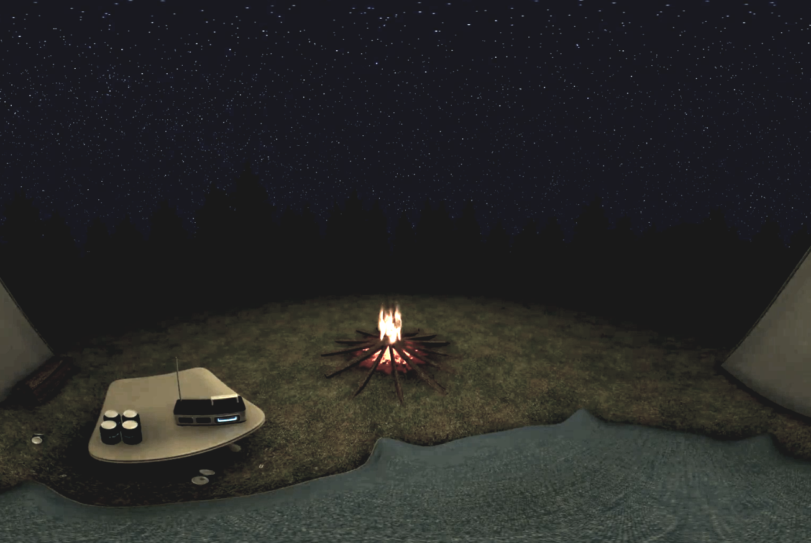

Defining Hygge
I interpreted hygge as the feeling you get when you're comfortable and cozy, sharing that feeling with friends and family around you. It's both a social and personal experience of relaxation and tenderness. Deep conversations with loved ones, being warm with a full stomach, all those moments in life that emphasize comfort.
My goal for this project was to create a device to enable or enhance hygge without being intrusive or awkward. I focused on the social aspect of it, researching ways to make conversations last longer, reviving that conversation when it died down, etc. The setting I imagined for this device was a living room or dining space.

Ideation
I started my ideation with a wide range of different hygge ideas. Some of them were very interesting but seem implausible in the time given. After looking through them all, I assumed I was on the right track, since the common ideas that stemmed from all my ideas were comfort and social interactions.
An idea that drew my interest more than the others was the idea of enforced hygge. I did some quick sketches for those ideas, but after consulting with my instructor, I felt that it may have been too aggressive, and gave the opposite feeling of hygge.

Idea #1: Dinner with Danes
Dinner with Danes allowed one to join a Danish family for dinner in virtual reality!
Idea #2: Potential Friends
For use at parties or gatherings, anyone being stared at would get a phone notification from the person staring at them, and they can swipe left or right to accept or reject their request to start a conversation.
Idea #3: Auto Hygge House
An automated home setup, intended on welcoming the user home by automatically adjusting all settings it can to be as hygge as possible.
Idea #4: Home Away From Home
For the homesick, this idea would allow people to immersively be in their house in virtual reality, perhaps with family and friends far away.
Idea #5: Cup of Tea
Cup of Tea is a virtual place used to meet new people. The user and others are virtually put into a coffee shop, as if you were there in virtual reality. This would allow you to meet people from all over the world.
Idea #6: Hygge Outfit
Hygge Outfit scans a user's closet and determines the most hygge outfit to wear for the day. There will be a mobile/desktop application that shows the user what the outfit of the day will be.
Idea #7: Be A Candle
No particular purpose but allowing a user to be a candle. Can be done with a friend, like a joint yoga kind of activity.
Idea #8: Hygge Food
The Kinect would scan your fridge for ingredients, then use them to make the most hygge food item possible, along with step by step instructions for making it.
Idea #9: Social Life
This idea is used to enforce hygge by shaming user for using their electronic devices.
Idea #10: Emergency Hygge
When the user is stressed, the Kinect would detect it and try its best to calm down the user by changing up variables in the house or workplace, such as temperature, or dimming the lights.
Idea #11: Painting Friendships
This interactive painting platform is intended on letting users relax alone or with a friend, painting a picture together or alone.
Idea #12: Storytelling Assistant
The Kinect is used to aid in storytelling, with preset assets for a story, the Kinect will detect certain trigger words with the microphone.
Variations
From the idea of enforced hygge, I decided to tone it down, and thought about how to make my ideas encourage hygge instead. Some ideas explored how to prevent users from using their devices when others are around, while some ideas assumed all the users were not strangers.
I found the similarities in my sketches to be with multiple people. Using the Kinect, I decided I needed to track several people at once, finding ways to encourage conversation when it's quiet, or to improve the hygge feeling when there are extended conversations without being intrusive.
Design Choices
I chose a fireplace as the main backdrop for chatting because I felt it was lowkey and gave a warm, cozy feeling. If I had some more time I would've opted to add many more backdrops that the users could choose from, switching through them via gestures. When a user pulls out their phone, I chose to use the red message due to other ideas not really being as effective. I found that the red sign drew more attention than any other options.
For the music, I decided that lowkey, cafe style music was the way to go. From several research papers (credited in the "Credits" section of this report), I read that conversation is enhanced when there is music playing quietly. It helps to pace the conversation, giving the people conversing a beat to speak to.
When users do not talk, a riddle is displayed. I tried several other techniques, such as conversation prompts, stopping/playing the music, and removing the landscape, but none were as effective (at least for the people who tested this for me) as riddles, which either confused the users, and made them talk about how confused they were, starting them up in conversation again, or prompted a discussion about the riddle, turning into more conversation.
Final Product
The final product is called "Hygge Social", a Kinect project created on Unity for my Human-Computer Interactions II class.
Video Demo
Downloads
Source Code
Credits
The fireplace is from a video called 'Fireplace - Full HD - 8 hours crackling logs for Christmas' by Christmas Time on Youtube. The background music is titled 'Duck Soup' by PurplePlanetMusic. A tutorial was followed for a small portion of this project. This application was created in Unity, a game engine created by Unity Technologies, and utilizes the Microsoft Kinect as an input device.